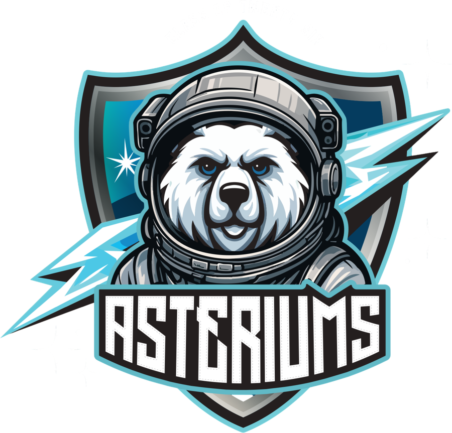
ASTERIUMS2026
Los momentos del último año, para volver a abrir cuando ya no estemos juntos.
2026, el trazo de nuestra historia
El 2026 es un año sumamente especial: es el punto de victoria que marca el final de una etapa inolvidable y, al mismo tiempo, el puerto de partida hacia un nuevo capítulo en nuestras vidas.
A lo largo de este camino vivimos de todo: reímos, lloramos, jugamos y hasta tuvimos nuestras diferencias, pero sin importar las emociones, jamás nos abandonamos. Desde aquellas manualidades en el salón, los juegos en el recreo y los gritos de apoyo en cada competencia, hasta las clases virtuales en pandemia donde combatíamos el sueño juntos, la organización de innumerables actividades y las charlas sinceras en la Convivencia. Cada esfuerzo compartido para alcanzar una misma meta fue pincelando este lienzo colectivo que hoy nos define. Con esta gran pintura terminada y llena de color, ha llegado el momento de emprender el vuelo hacia nuestros sueños.
No importa cuán lejos te lleve el futuro ni qué tan altos sean tus desafíos, recuerda siempre que aquí tienes a tu segunda familia. ASTERIUMS será para siempre tu refugio y tu mejor respaldo.
Una puerta para cada momento del año
Toca un nombre y la revista se abre ahí.
Cada momento se abre en sus propias páginas.Los que aún no están listos dicen En preparación.
ASTERIUMS
Asteriums nace de la palabra “aster”, que en griego significa estrella. Simboliza el universo creado por una generación de estudiantes que culmina una etapa llena de sueños, amistad y crecimiento.
Toca el logo y las estrellas giran más rápido.
Si alguna vez te tocó una cuota, un aviso o una fila, ya sabes a quién agradecerle. Búscalos y dales las gracias.
Junta Directiva
[PROM2026][La Salle-Margarita]
Desliza hacia arriba o hacia abajo
Ustedes dieron la cara por todos los demás. Convocaron, anotaron, contaron y repartieron. Gracias por los esfuerzos que hicieron para ASTERIUMS.
First Last Day
2 de marzo de 2026Toca una foto para verla grande.
Marco gigante con la estrella de La Salle, fondo de galaxia, un cohete y globos amarillos: así empezó el último año de la promoción.
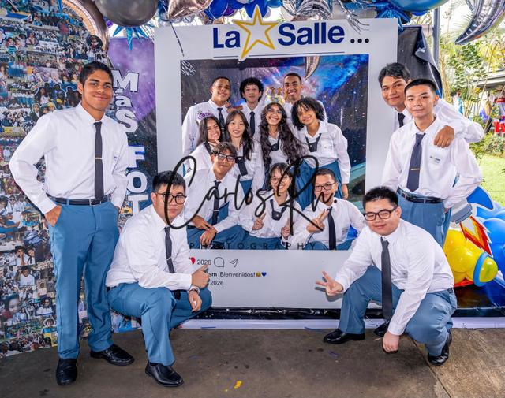
Foto de curso
Un grupo grande, unos de pie y otros agachados, dentro del marco.

Diademas en fila
Un grupo con diademas posa bien apretado.

Dos chicos
Camisa blanca y pantalón azul, lado a lado.

Visitas de colores
Dos personajes disfrazados se asoman al marco.

De cuerpo entero
Frente al fondo de galaxia, con el uniforme puesto.
First Last Day, página 2 de 4
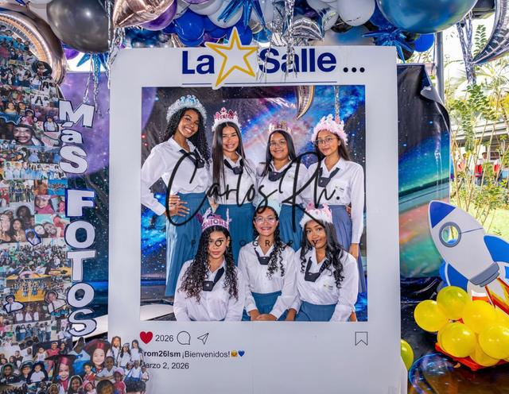
Todas con diadema
Grupo de chicas con diademas y uniforme.
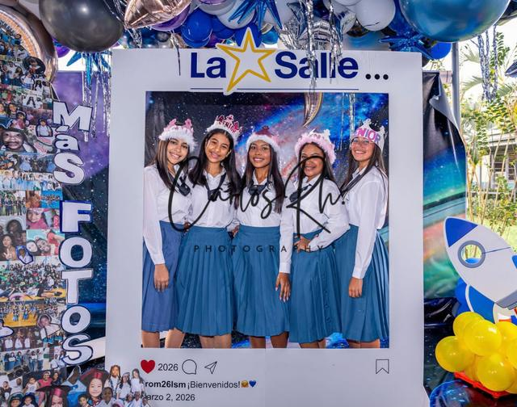
Quinteto de diademas
Cinco chicas de azul y blanco, hombro con hombro.

Dúo con diademas
Dos chicas, hombro con hombro.

Pose a cámara
Blusa blanca, falda azul y marco de La Salle.
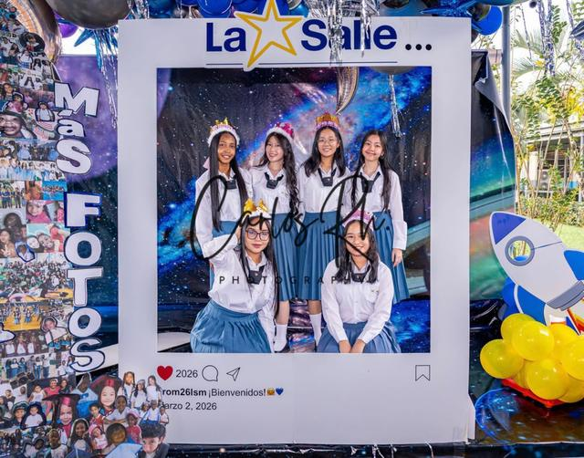
En dos filas
Unas de pie y otras agachadas, con diademas.
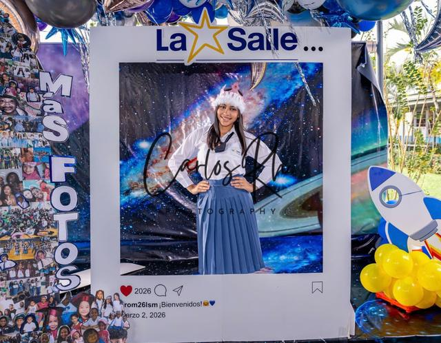
Con diadema
La mano en la cintura y una diadema blanca.

Dúo de uniforme
Dos chicos miran de frente a la cámara.
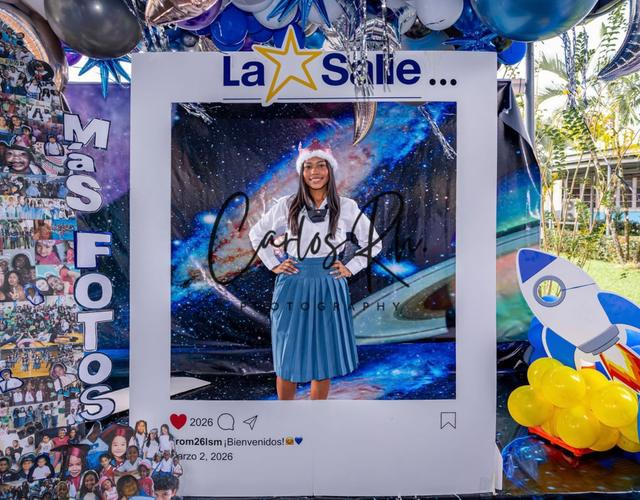
Diadema y pose
Una chica posa sola frente a la galaxia.

Todas al marco
Un grupo de chicas, muy juntas, con diademas.
Cada quien con su pose
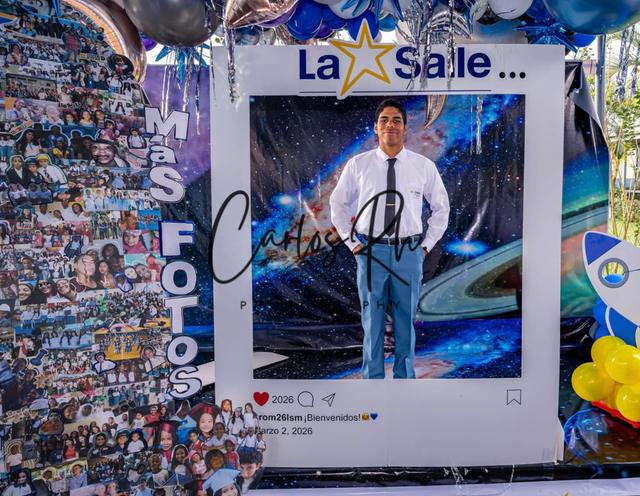
Camisa blanca
Un chico posa derecho, con corbata.

Dos y dos
Dos chicos y dos chicas, de pie frente al fondo de galaxia.

Fuera del marco
Dos chicas sonríen; una lanza un beso.
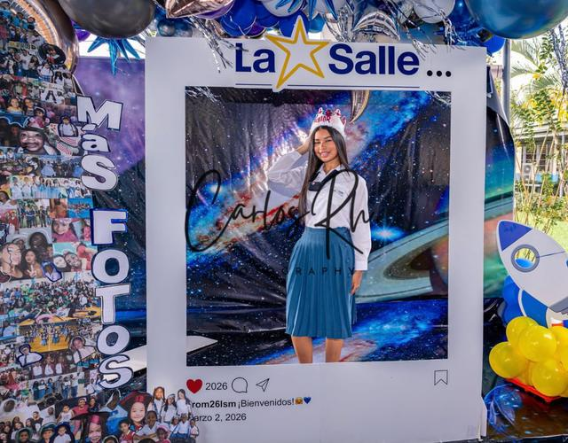
Sonrisa de estreno
Una chica de uniforme, de pie en el marco.
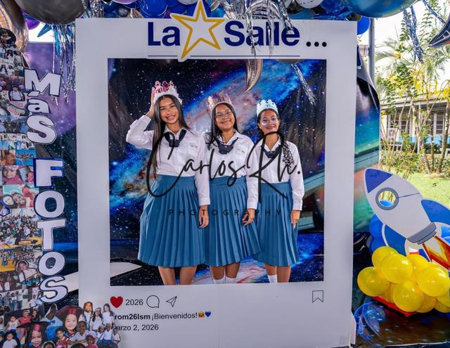
Trío de diademas
Tres chicas, una al lado de la otra.

Cuatro en el marco
Cuatro estudiantes con diademas posan de pie.
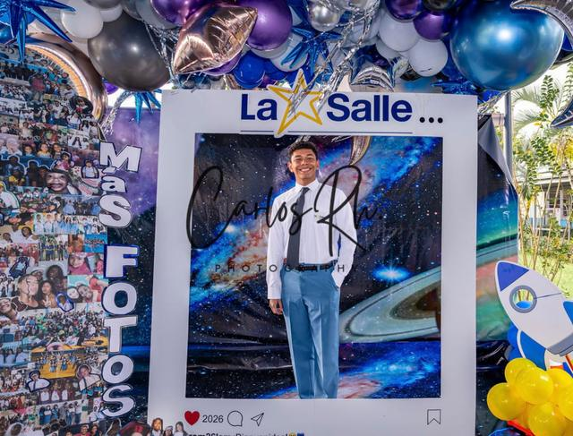
Bien derecho
Un chico solo, de pie frente al marco.
First Last Day, página 4 de 4

Cuatro con corbata
Los cuatro, bien derechos frente al marco.
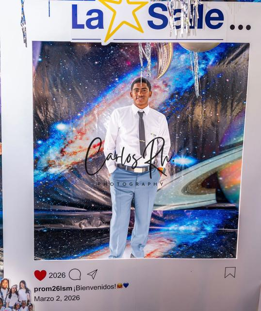
Con corbata
Un chico posa con las manos al frente.

Dúo de chicas
Dos chicas posan juntas frente al marco.
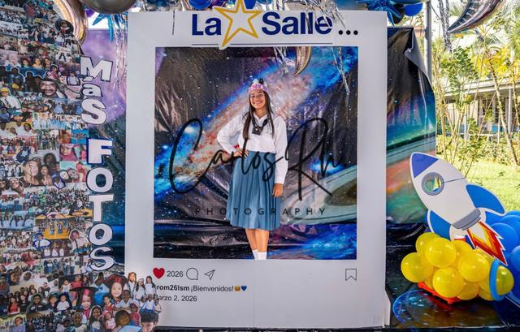
Marco entero
Una chica de cuerpo entero con la galaxia detrás.

Tres de azul
Tres chicas de uniforme, con diademas.
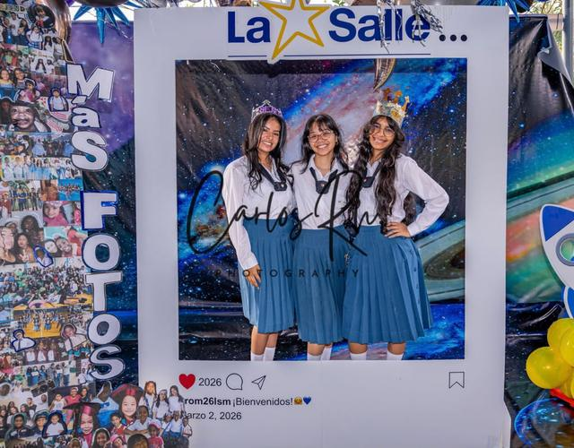
Trío de uniformes
Tres chicas posan juntas, con diademas.
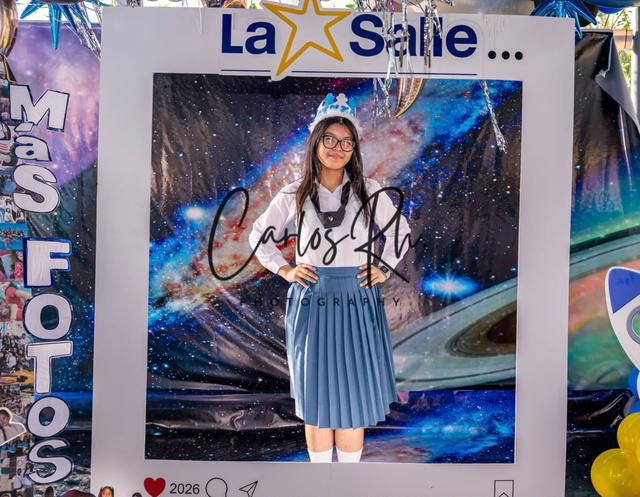
Bienvenida estelar
Blusa blanca y falda azul bajo la estrella de La Salle.

La de la diadema
Sola en el marco, con las manos en la cintura.
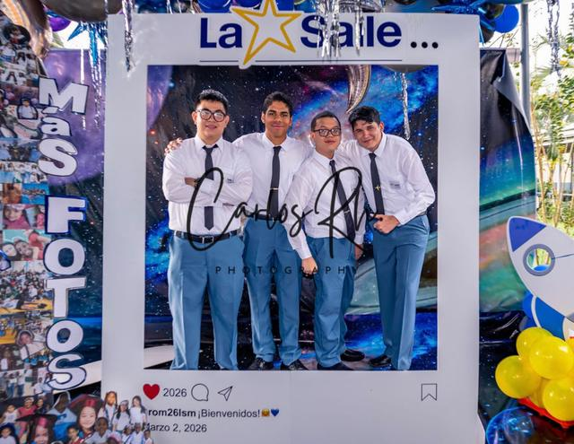
Cinco chicos
Camisa blanca y corbata, todos en fila.
+10fotos más
Son 39 fotos en total. Toca la última para ver las que faltan y pasa con las flechas.
Acto Cívico
9 de marzo de 2026Toca una foto para verla grande.
Primero entró la bandera de Panamá. Después, uno por uno, pasaron al atril de La Salle con el micrófono y, algunos, con las hojas en la mano.
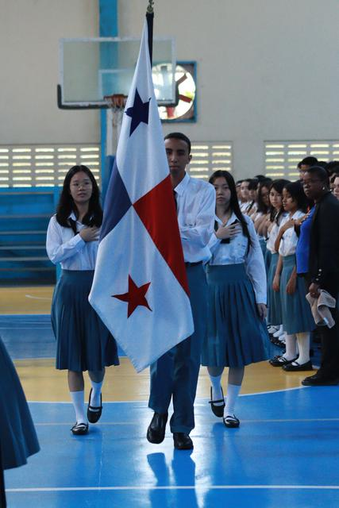
La bandera entra
La bandera de Panamá avanza al frente de la fila, por la cancha.
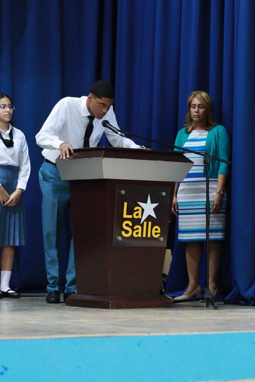
Al micrófono
Un estudiante se acerca al micrófono del atril.
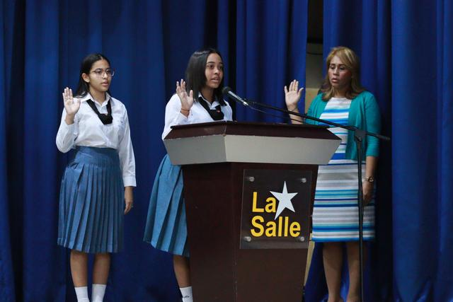
Mano en alto
Dos estudiantes y una docente, frente al atril de La Salle.
Acto Cívico, página 2 de 2
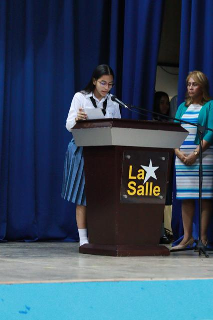
Turno en el atril
Una estudiante lee, con una docente a su lado.

Voz y micrófono
Un estudiante habla mientras una compañera y la docente lo acompañan.
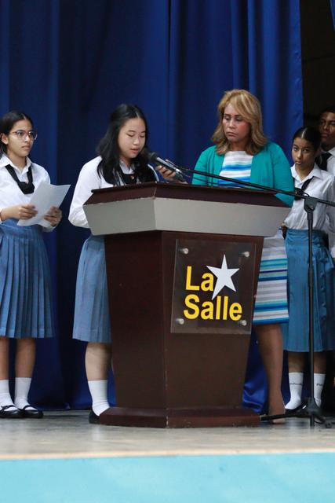
Dos voces
Una estudiante lee y la docente sigue atenta, a un lado.

Lectura en voz alta
Una estudiante lee frente al atril, con el micrófono cerca.

Hoja en mano
Las compañeras esperan su turno con las hojas listas.

Atención en el atril
Un momento de lectura, con compañeras detrás.
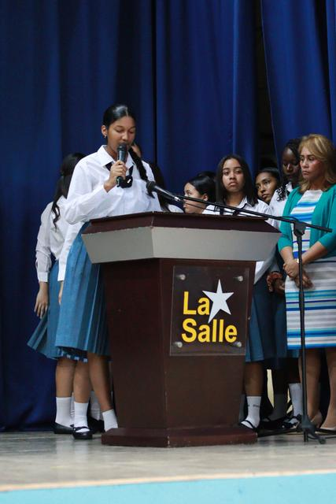
Detrás del atril
Varias estudiantes se reúnen junto al atril.
Ethnic's Day
Trajes, danza y tamborToca una foto para verla grande.
Trajes tradicionales chinos, danza del león, tambor y abanicos: el colegio se llenó de rojo, rosa y celeste.
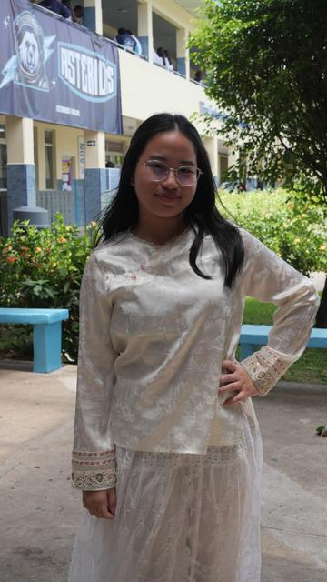
De crema y blanco
Una chica con traje tradicional chino claro; detrás, la bandera ASTERIUMS.
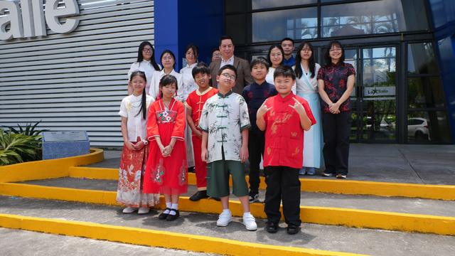
En la escalera amarilla
Estudiantes y docentes de rojo y de colores, en las gradas de la entrada.
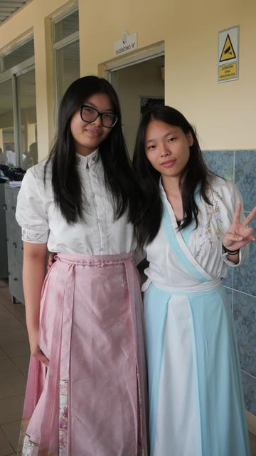
Rosa y celeste
Dos amigas con trajes tradicionales: falda rosa y túnica celeste.
Ethnic's Day, página 2 de 2
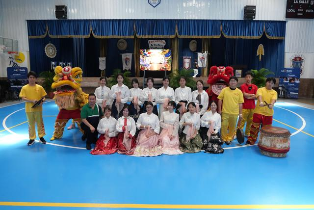
El león y el tambor
El león de la danza, el tambor y todo el grupo, en la cancha.
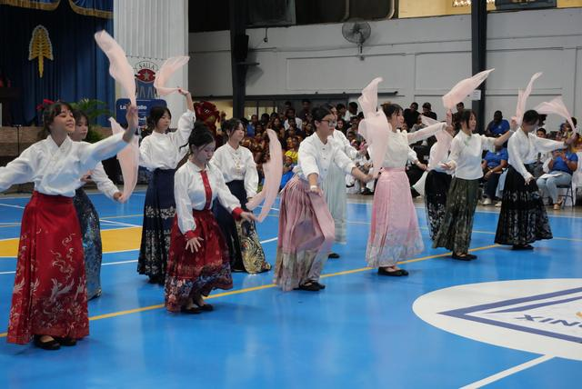
Abanicos al aire
Danza con abanicos y faldas rojas, en el gimnasio.
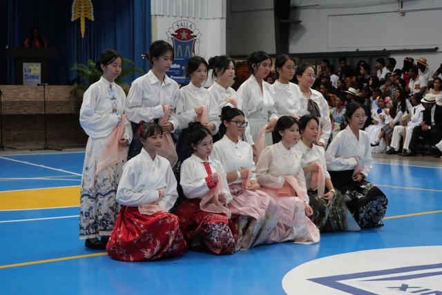
Cierre de la danza
Las bailarinas se agachan en la cancha, con el público detrás.
Semana Santa
Procesión y representaciónToca una foto para verla grande.
La procesión salió a la calle con el palio y el anda. Después, en el escenario, los estudiantes representaron la Pasión hasta llegar al «Jesús vive».

El cortejo, desde arriba
Vista de dron: la fila avanza por el camino detrás de dos figuras de blanco.

El anda en la calle
Estudiantes llevan la imagen entre flores, por el asfalto.
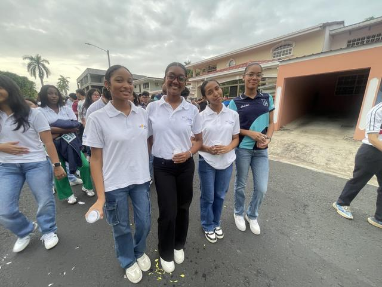
Camino a la procesión
Cuatro estudiantes de blanco caminan del brazo entre la gente.
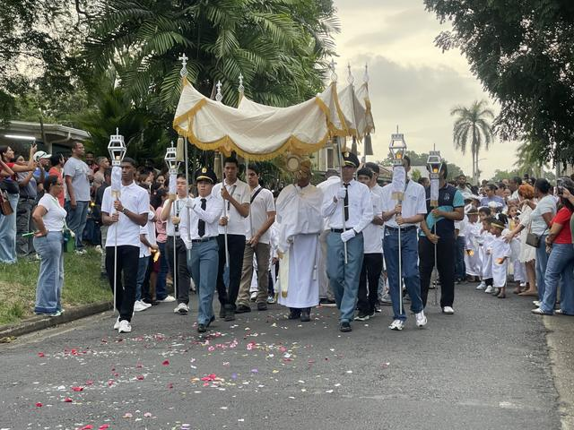
Bajo el palio
El palio dorado avanza sobre pétalos, con el público a los lados.
Semana Santa, página 2 de 4
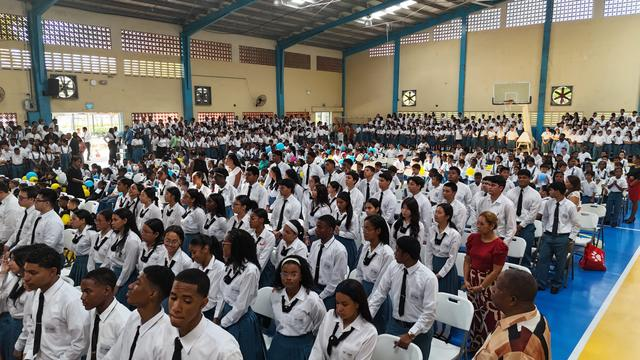
Todo el colegio en la cancha
Estudiantes de camisa blanca llenan el gimnasio.
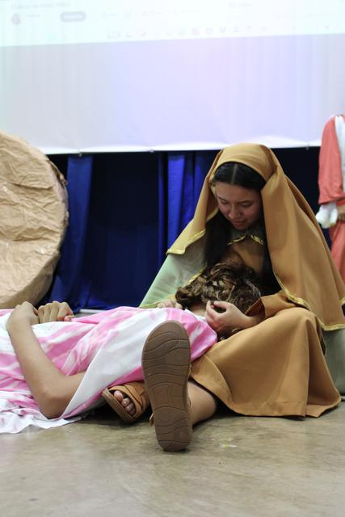
El duelo
Una mujer con manto acompaña a quien yace en el suelo.

Túnicas y armaduras
Personajes frente a la roca del sepulcro; uno sostiene una tela blanca.

Elenco completo
Túnicas de colores y mantos, todos juntos en el escenario.
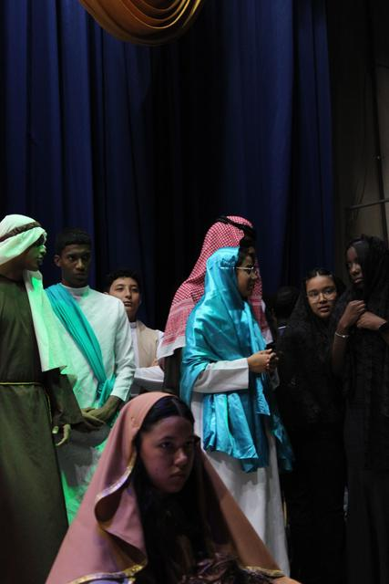
Mantos turquesa y rosa
Mujeres de la escena, con mantos de colores.

Naranja, vino y turquesa
Vestuario de época reunido en una misma escena.
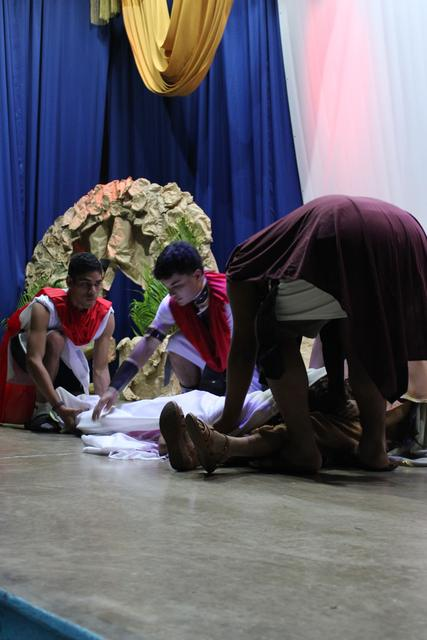
Junto a la gruta
Dos personajes se inclinan sobre una figura en el suelo, frente a la gruta.

Los dos de blanco
Ante la roca del sepulcro, con una palma al lado.
De la Pasión a la Resurrección
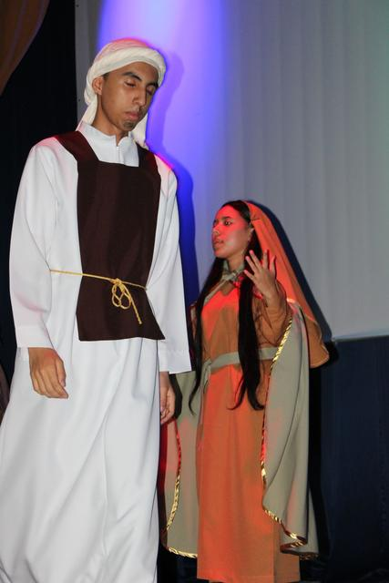
De época
Él, de chaleco café y túnica blanca; ella, de manto naranja.

Cuatro personajes
Naranja y turquesa bajo luces rojas y moradas.

Dos mantos
Manto beige y manto turquesa, de pie frente a la cortina.

En fila sobre el escenario
Los personajes esperan su turno; a la derecha, el atril de La Salle.

Ante la gruta
Un personaje de blanco con banda roja frente a la entrada de la gruta.
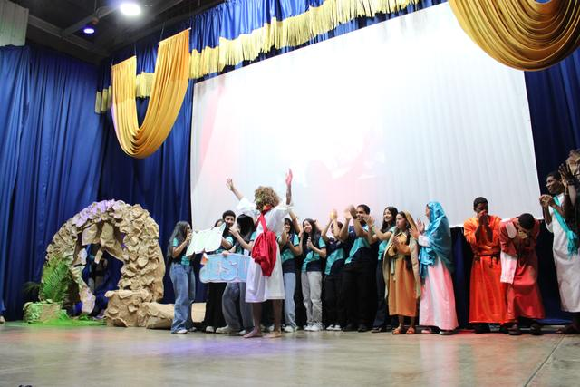
El escenario completo
La gruta a la izquierda y el elenco repartido a lo largo.
Semana Santa, página 4 de 4

Celebración final
El elenco, con los brazos arriba, celebra sobre el escenario.

Jesús vive
Cuatro estudiantes sostienen el cartel «Jesús vive».

Brazos en alto
El personaje de blanco con banda roja levanta los brazos ante el elenco.

Lectura en el atril
Dos jóvenes junto al atril de La Salle, uno con micrófono.
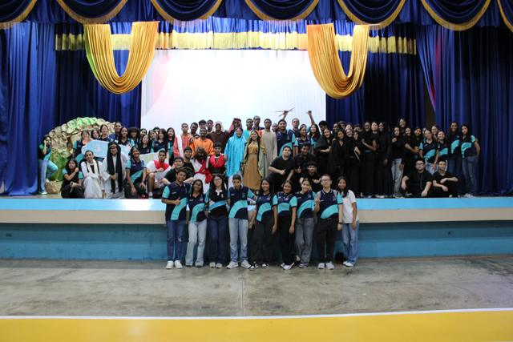
Foto de todos
El elenco y sus compañeros posan juntos en el escenario.
Al final, el cartel lo dijo todo: Jesús vive.
Labor Social
Con la camisa de AsteriumsToca una foto para verla grande.
La promoción armó mesas con bolsitas de colores, pintó caritas, jugó con los niños y se tomó la foto de grupo.
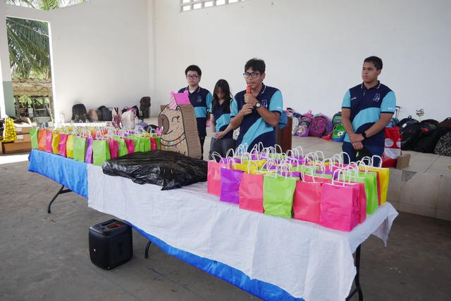
La mesa de las bolsitas
Bolsas de colores listas sobre la mesa, con tres voluntarios detrás.
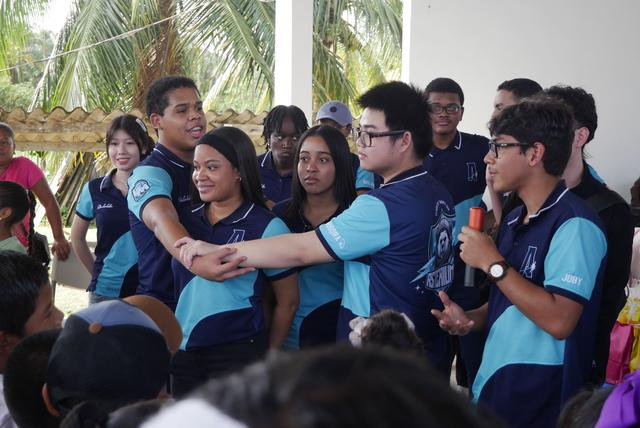
Manos al centro
Los voluntarios apilan las manos en círculo.
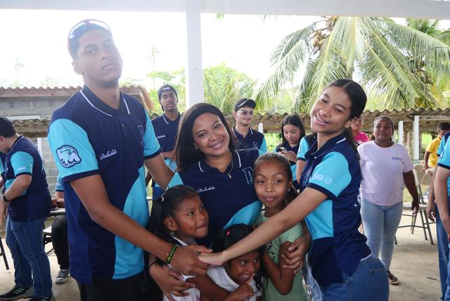
Niños en medio
Los voluntarios abrazan a los más pequeños.
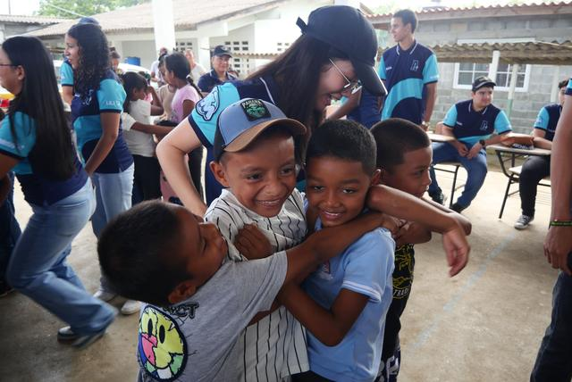
Risas y abrazos
Los niños se abrazan entre ellos durante el juego.
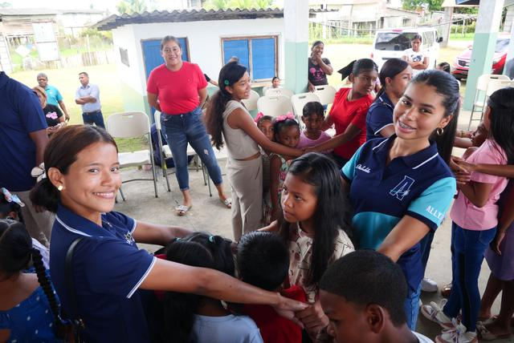
Entre la gente
Una voluntaria sonríe mientras los niños se acercan.
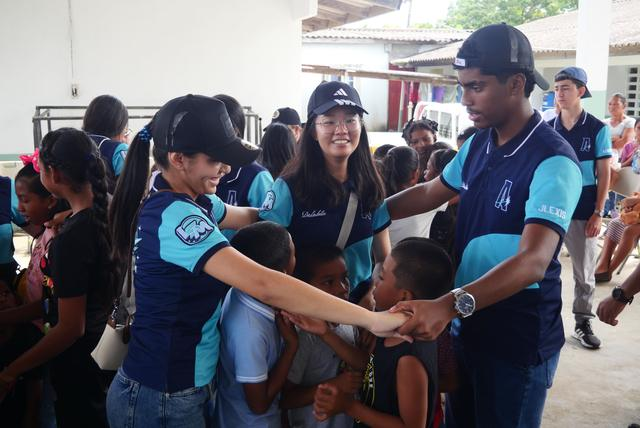
Saludo uno a uno
Los voluntarios chocan la mano de cada niño.
Labor Social, página 2 de 4
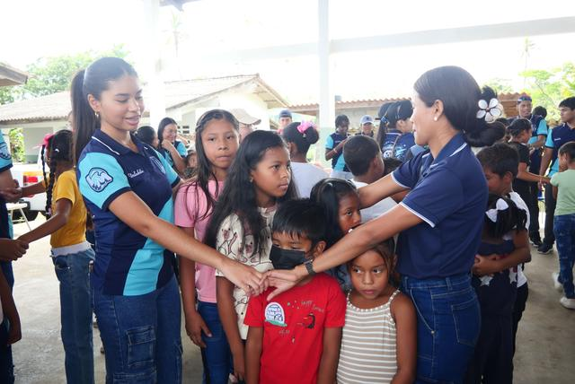
Fila de saludos
Dos voluntarias reciben a los niños con la mano extendida.
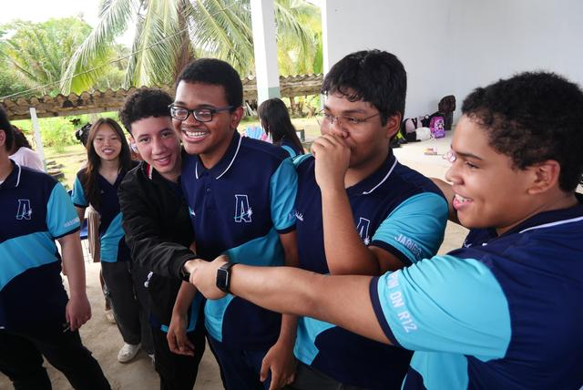
Risa contagiosa
Los voluntarios no aguantan la risa.
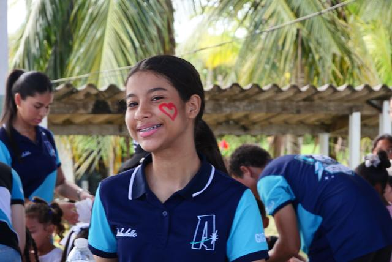
Un corazón en la mejilla
Una voluntaria sonríe con la cara pintada.
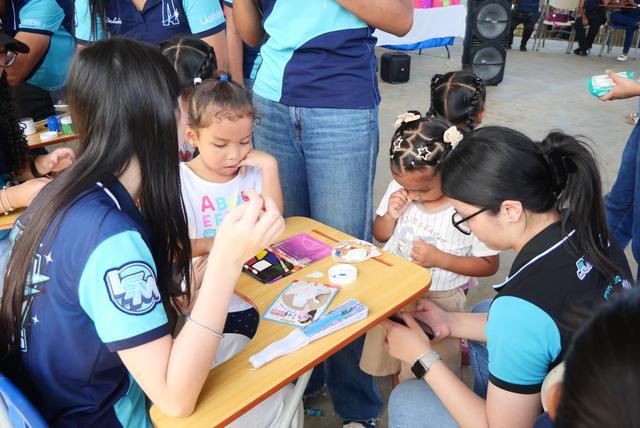
Mesa de pintura
Una voluntaria pinta la cara de una niña; otras esperan su turno.
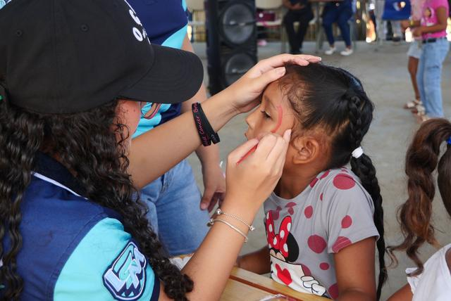
Pincel en mano
Con la gorra puesta, una voluntaria pinta una carita.
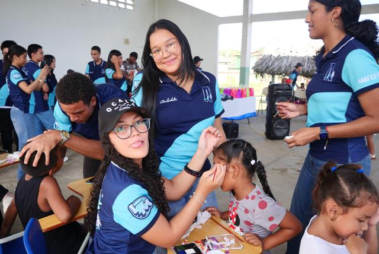
Pintacaritas, mesa llena
Varias mesas, varios pinceles y una fila de niños.
De dos en dos
Dos voluntarias pintan caritas al mismo tiempo.
Caritas pintadas, juegos y saludos
Cara pintada
Un voluntario pinta la cara de un niño.
Detalle de pintura
Alguien filma con el celular una carita recién pintada.
Juego en el césped
Voluntarios y niños, de pie en el patio.
Pausa en la mesa
Una niña posa con los voluntarios junto a la mesa.
Todos juntos
Voluntarios y niños, en una sola foto de grupo.
Juego con palo
Un niño con un palo en la mano y una figura de cartón colgada.
Entrega de bolsitas
Voluntarias posan junto a la mesa; una niña lleva su bolsa rosada.
Despedida
Una voluntaria y un niño con mochila azul posan en el césped.
El equipo completo
La promoción posa bajo el techo del patio.
Labor Social, página 4 de 4
Con su bolsita
Una niña de amarillo posa con una voluntaria, junto a las bolsas.
Una carita nueva
Una voluntaria pinta la mejilla de un niño.
Corazón rojo
Pincel fino y un corazón rojo en la mejilla.
Jugar afuera
Un voluntario le indica algo a un niño de blanco en el patio.
Abrazo grande
Una voluntaria abraza a un grupo de niñas.
Uno más en la foto
Un voluntario se agacha al frente del grupo.
Micrófono en mano
Una voluntaria con gorra habla al micrófono.
Sonrisas del equipo
Un niño se cuela entre las voluntarias.
+10fotos más
Son 39 fotos en total. Toca la última para ver las que faltan.
Guarda esta revista donde guardes lo que no piensas tirar.

Escaneen el código @asteriums2k26

Autores: Michel Wu, Isabel Liu, Sofia Liao y Cecilia Qiu.